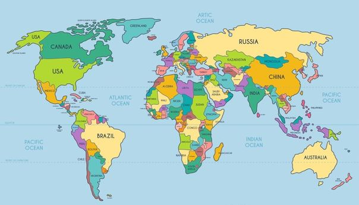

1.1 데이터의 구조
컴퓨터 네트워크와 모바일 기기의 급격한 발전으로 매년 발생하는 데이터의 양은 기하급수적으로 증가하고 있다. 데이터를 분석하여 유용한 정보로 가공할 수 있는 능력은 전공을 불문하고 모든 분야에서 점점 중요해지고 있다. 장래 희망이나 직업 선택은 물론 일상생활에서 필요한 의사결정을 하기 위해서도 통계 지식이 필요한 세상이다. 효과적인 데이터 수집과 분석을 통하여 좀더 나은 의사결정을 할 수 있음을 이 수업에서 배우게 될 것이다.
통계학은 데이터를 수집하여 기술하고 분석하는 과학이다(Statistics is the science of collecting, describing, and analyzing data). 이번 장에서 데이터를 효과적으로 수집하는 방법을 배울 것이다. 다음 장에서는 수집한 데이터를 기술하는 방법을 소개할 것이다. 그 후에는 데이터를 분석하여 효과적인 결론을 유도하고 숨겨진 진실을 찾는 방법을 다룰 것이다.
데이터 1.1. 대학생 설문조사
한 대학에서 몇 년간 “통계학” 교양과목을 수강한 학생을 대상으로 설문조사를 하였다. 일부 항목에 대한 몇몇 학생의 조사 결과는 다음 표와 같다. 전체 학생 \(362\)명의 \(17\)개 변수에 대한 데이터는 여기에서 얻을 수 있다(파일 이름은 StudentSurvey).
케이스와 변수
정보 조사 대상인 사람이나 사물을 케이스(case)라고 한다. StudentSurvey 데이터에서 케이스는 설문에 응답한 학생이다. 위 표에서 각 행은 모두 다른 학생 즉, 케이스이다.
각 케이스가 가지는 특성을 변수(variable)라고 한다. 위 표에서 각 열은 서로 다른 변수이다. 데이터 테이블에서 변수는 열, 케이스는 행으로 표시한다.
어떤 데이터이든 처음에 할 일은 각 변수는 무엇을 측정한 것이고 변숫값은 어떻게 코딩되어 있는지 이해하는 것이다. 위 데이터 테이블에서 첫번째 ID 변수는 설문조사에 응한 개인을 식별하는 숫자이다(ID를 분석하는 것이 의미 있을까?). 다른 변수들의 의미를 알아보자.
- Gender: 성별(M은 남성, F는 여성)
- Smoke: 흡연 여부(yes, no)
- Award: 학생이 선호하는 수상(아카데미상, 올림픽 금메달, 노벨상)
- Exercise: 주당 운동 시간
- TV: 주당 텔레비젼 시청 시간
- GPA: 평균 학점(\(4\)점 만점)
- Pulse: 조사 당시 분당 맥박수
- Birth: 출생 순서(\(1\)은 첫째, \(2\)는 둘째 등)
데이터 테이블은 케이스(case)에 관한 정보를 모은 것이다. 각 케이스의 정보를 데이터 테이블에서 행(row)으로 표시한다.
변수(variable)는 각 케이스에 대한 어떤 특성이다. 변수는 데이터 테이블에서 열(column)로 표시한다.
예제 1.1. ID가 \(1\)인 학생의 각 변숫값은 무엇을 뜻하는지 설명하라.
풀이 (클릭하면 풀이가 보입니다)
학생 \(1\)은 남성이며 담배를 피우지 않는다. 아카데미상, 노벨상 보다는 올림픽 금메달을 원한다. 주당 \(10\)시간을 운동하고 텔레비젼 시청은 주당 \(1\)시간이다. 평균 학점은 \(3.13\)이고 조사 당시 분당 맥박수는 \(54\)회이다. 출생 순서는 네번 째이다.
확인문제 1. 다음 중 “케이스(case)”의 정의로 가장 적절한 것은?
1 데이터를 분석하기 위한 통계적 기법
2 연구에서 측정하는 변수들의 목록
3 조사 대상이 되는 개별적인 사람이나 사물
4 데이터를 저장하는 파일의 형식
확인문제 2. 다음 중 “변수(variable)”에 해당하는 것은 무엇인가?
1 설문조사에 응답한 학생 한 명
2 학생의 성별, 평균 학점, 주당 운동 시간 등의 정보
3 데이터가 저장된 파일의 ID 번호
4 설문에 참여한 전체 학생 수
확인문제 3. 다음 중 “ID” 변수를 데이터 분석에 활용하기 어려운 이유로 가장 적절한 것은?
1 모든 케이스에 대해 고유한 값이기 때문이다.
2 ID는 학생의 특정한 특성을 측정하는 변수가 아니기 때문이다.
3 ID 값은 분석하기에 너무 복잡하기 때문이다.
4 ID는 데이터 테이블의 첫 번째 열에 위치하기 때문이다.
범주형 변수와 양적 변수
데이터를 어떻게 기술하고 분석하는 것이 가장 좋은가를 결정하려면 변수가 범주형(categorical)인지 양적(quantitative)인지 구분할 줄 알아야 한다.
범주형 변수(categorical variable)는 케이스를 그룹(group)으로 나눈다. 각 케이스는 둘 이상의 범주 중에서 반드시 어떤 하나의 범주에 속해야 한다.
양적 변수(quantitative variable)는 각 케이스를 수치로 측정한 값이다. 양적 변수에 대해서는 더하거나 평균 계산과 같은 수치 연산을 할 수 있다.
범주형 변수의 값을 숫자로 코딩했다고 양적 변수가 되는 것은 아님을 명심해야 한다. 예를 들어, 남성은 \(1\), 여성은 \(2\)로 코딩된 “성별” 변수는 범주형 변수이다. 범주형 변수에 대한 주요 관심은 평균보다는 각 범주의 빈도(frequency) 또는 비율(proportion)이다.
양적 변수를 범주형 변수로 변환하는 것이 유용할 때도 있다. 예를 들어, 숫자로 표현된 “가계 수입”을 \(3\)개의 범주(“low”, “medium”, “high”)로 표기한다면 범주형 변수가 된다.
예제 1.2. 대학생 설문조사에서 각 변수가 범주형인지 양적인지 구분하라.
풀이 (클릭하면 풀이가 보입니다)
ID는 변수가 아니므로 양적인지 범주형인지 구분할 필요도 없다. 대부분의 데이터 테이블에는 케이스 참조용인 ID 또는 이름이 있는데 항상 분석에서 제외해야 한다.
- Gender 변수는 범주형이다. 학생을 남성 또는 여성으로 분류한다.
- Smoke 변수는 범주형이다. 학생을 흡연자와 비흡연자로 나눈다.
- Award 변수는 범주형이다. 학생은 아카데미상, 올림픽 금메달, 노벨상 중에서 어떤 상을 선호하는가로 나뉜다.
- Exercise, TV, GPA는 모두 양적 변수이다. 각 학생의 수치적 특성을 측정하기 때문이다. 주당 평균 운동시간처럼 평균을 계산하는 것이 의미 있다.
- Birth는 양적, 범주형 모두 가능하다. 평균 출생 순서에 관심이 있다면 양적 변수이다. 출생 순서 별로 케이스가 얼마나 많은지 관심이 있다면 범주형 변수가 된다.
확인문제 1. 다음 중 범주형 변수(categorical variable)에 해당하는 것은?
1 학생의 평균 학점(GPA)
2 학생이 선호하는 상(Award: 아카데미상, 올림픽 금메달, 노벨상)
3 학생의 주당 운동 시간(Exercise)
4 학생의 분당 맥박수(Pulse)
확인문제 2. 다음 중 양적 변수(quantitative variable)에 해당하는 것은?
1 학생의 흡연 여부(Smoke: Yes/No)
2 학생의 성별(Gender: 남성/여성)
3 학생의 주당 텔레비전 시청 시간(TV)
4 학생이 출생한 계절(Birth Season: 봄/여름/가을/겨울)
확인문제 3. 다음 중 변수를 범주형으로 변환하는 예시로 가장 적절한 것은?
1 학생의 평균 학점을 \(4\)점 만점으로 변환한다.
2 학생의 출생 순서를 첫째, 둘째, 셋째 이상으로 나눈다.
3 학생의 운동 시간을 분 단위로 세분화한다.
4 학생의 성별을 숫자로 코딩하여 \(1\)은 남성, \(2\)는 여성으로 변환한다.
변수와 변수 사이의 관계 조사
변수 하나에 대하여 기술하고 분석하는 방법을 소개한 다음, 둘 또는 그 이상의 변수들 사이의 관계를 다룰 것이다. 예를 들어, 대학생 설문조사에서 다음과 같이 변수 하나에 대한 질문을 할 수 있다.
- 담배를 피우는 학생들의 비율은 무엇인가?
- 주당 평균 운동 시간은 몇 시간인가?
- 맥박수가 특이하게 높거나 낮은 학생이 있는가?
- 학생은 장래에 어떤 상을 받기를 가장 많이 원하는가?
- 설문에 응답한 학생들의 평균 학점과 이 대학의 전체 학생의 평균 학점을 비교한 결과는 무엇인가?
유용하거나 흥미로운 질문은 변수들 사이의 관계로부터 나오는 경우가 많다. 예를 들어, 대학생 설문조사에서 다음과 같은 변수들 사이의 관계에 대한 질문을 할 수 있다.
- 남성과 여성, 누가 담배를 더 많이 피울까?
- 장래에 올림픽 금메달을 따기 원하는 학생 그룹이 다른 그룹보다 운동을 더 많이 하는 경향이 있을까? TV 시청 시간이 많을수록 아카데미상을 더 선호할까?
- 남성과 여성 중 누가 TV를 더 많이 시청할까?
- 운동을 많이 하는 학생일수록 맥박수가 더 낮은 경향이 있을까?
- 첫째로 태어난 학생들의 평균 학점이 더 높을까?
위에서 제기한 질문은 각각 범주형 변수 두 개, 양적 변수 두 개, 양적 변수와 범주형 변수 사이의 관계에 관한 것이다. \(3\)가지 각각의 상황 별로 변수 사이의 관계를 분석하는 통계적 기법을 뒤에서 하나씩 소개할 것이다.
확인문제 1. 다음 중 **양적 변수(quantitative variable)**에 해당하는 것은 무엇인가?
1 성별 (남/여)
2 주당 운동 시간
3 좋아하는 영화 장르
4 장래 희망 상(노벨상, 아카데미상 등)
5 흡연 여부 (예/아니오)
확인문제 2. “운동을 많이 하는 학생일수록 맥박수가 더 낮은 경향이 있을까?”라는 질문은 어떤 변수 관계를 조사하는 것인가?
1 범주형 변수 \(2\)개 간 관계
2 양적 변수 \(2\)개 간 관계
3 범주형과 양적 변수 간 관계
4 시간에 따른 추세 분석
5 모집단과 표본 비교
확인문제 3. 다음 중 범주형 변수 두 개 간의 관계를 조사하는 질문은 무엇인가?
1 남성과 여성 중 누가 담배를 더 많이 피울까?
2 TV 시청 시간이 많을수록 아카데미상을 더 선호할까?
3 운동을 많이 하는 학생일수록 맥박수가 더 낮은 경향이 있을까?
4 설문에 응답한 학생의 평균 학점과 전체 평균 학점은 차이가 있을까?
5 주당 평균 운동 시간은 몇 시간인가?
데이터 1.2. 전세계 국가
\(2008\)년 세계은행에서 공표한 \(213\)개 국가에 관한 데이터가 AllCountries 이다.
예제 1.3. AllCountries 데이터에는 국가 별 인터넷 접속률 정보가 있다.
(1) \(2008\)년 아이슬란드의 인터넷 접속률은 \(90\%\)로 세계에서 가장 높다. 아이슬란드 데이터에서 케이스는 무엇인가? 어떤 변수가 사용되었는가? 이 변수는 범주형인가 아니면 양적인가?
(2) AllCountries 데이터에는 모든 국가의 인터넷 접속률이 있다. 케이스는 무엇인가? 어떤 변수가 사용되었는가? 이 변수는 범주형인가 아니면 양적인가?
풀이 (클릭하면 풀이가 보입니다)
(1) 아이슬랜드에서 인터넷 접속률을 조사할 때, 케이스는 아이슬란드에 사는 사람이다. 관련 변수는 개인의 인터넷 접속 여부이다. 접속 여부는 yes/no이므로 이 변수는 범주형이다.
(2) AllCountries 데이터에서 케이스는 국가이다. 변수는 인터넷 접속률이다. 각 국가의 인터넷 접속률은 수치이므로 이 변수는 양적이다.

앞의 예제에서 다룬 것처럼 케이스는 무엇인지 변수는 양적인지 아니면 범주형인지 구분할 줄 알아야 올바른 통계분석 기법을 적용할 수 있다.
예제 1.4. 뒷 장에서 AllCountries 데이터를 가지고 다음 질문 중에 몇 개를 다룰 것이다. 각 질문이 변수 하나에 관한 것인지 아니면 변수들 사이의 관계에 관한 것인지 구분하라. 또한 변수들은 양적인지 아니면 범주형인지 구분하라.
(1) \(1\)년 동안 국가의 평균 에너지 사용량은 얼마인가?
(2) 영토가 넓은 나라는 시골 인구가 더 많은 경향이 있는가?
(3) 국방과 건강에 대한 정부 지출이 관계가 있다면 무엇인가?
(4) 출생률은 선진국과 개발도상국 중에 어디가 더 높을까?
(5) 어느 나라의 노인 비율이 가장 높을까?
풀이 (클릭하면 풀이가 보입니다)
(1) 에너지 사용량은 하나의 양적 변수이다.
(2) 영토와 시골 인구 비율은 모두 양적 변수이다. 두 양적 변수 사이의 관계에 대한 질문이다.
(3) 국방과 건강에 대한 정부 지출은 모두 양적 변수이다. 두 양적 변수 사이의 관계에 대한 질문이다.
(4) 출생률은 양적 변수이다. 선진국이냐 아니면 개발도상국이냐는 범주형 질문이다. 양적 변수와 범주형 변수 사이의 관계에 대한 질문이다.
(5) 케이스가 국가이므로 노인 비율은 하나의 양적 변수이다.
확인문제 1. AllCountries 데이터에서 “인터넷 접속률” 변수가 양적 변수인지 범주형 변수인지 올바르게 판단한 것은?
1 인터넷 접속 여부는 Yes/No로 구분되므로 범주형 변수이다.
2 인터넷 접속률은 국가별 비율(%)로 표현되므로 양적 변수이다.
3 인터넷 접속률은 국가별로 다르므로 범주형 변수이다.
4 인터넷 접속률은 국가의 특성을 나타내므로 분석에 사용할 수 없다.
확인문제 2. 다음 중 두 개의 양적 변수 간의 관계를 분석하는 질문으로 적절한 것은?
1 국방비와 건강 지출 사이에는 어떤 관계가 있는가?
2 출생률은 선진국과 개발도상국 중 어디에서 더 높은가?
3 인터넷 사용률을 ‘높음/중간/낮음’으로 구분했을 때, 각 집단의 출생률에 차이가 있는가?
4 어느 나라의 노인 비율이 가장 높은가?
확인문제 3. 다음 질문 중에서 하나의 변수만을 고려하는 단변량(univariate) 분석에 해당하는 것은?
1 국가의 평균 에너지 사용량은 얼마인가?
2 국방비 지출과 건강 지출 간의 관계는 무엇인가?
3 개발도상국과 선진국에서 출생률 차이가 있는가?
4 시골 인구 비율과 영토 크기 사이에는 관계가 있는가?
질문에 답하기 위한 데이터
StudentSurvey, AllCountries 데이터는 모두 많은 정보를 갖고 있다. 이 정보를 사용하여 학생과 국가에 대하여 더 많은 것을 알아낼 수 있다. 생산되는 데이터의 종류와 양이 많아질수록 데이터에서 빠르고 정확하게 유용한 정보를 뽑아내는 요구도 크게 증가하고 있다.
하지만 순서가 반대인 경우도 자주 있다. 먼저 질문을 하고 이 질문에 답하기 위하여 데이터를 수집하는 것이다.
예제 1.5. 빨리 달리게 하는 유전자가 있는가?
ACTN3 유전자는 빠르게 달리게 하는 근육과 연관된 단백질이다. 이 단백질을 생성할 수 없는 ACTN3 변이 유전자를 가진 사람도 있다. 빨리 달리는 능력과 ACTN3 유전자 사이에 관계가 있는지 알아보기 위하여 유전학자는 세 그룹을 비교하였다. 세 그룹은 각각 세계 정상급 단거리 선수, 세계 정상급 마라톤 선수, 일반인이다. 단거리 선수 그룹에서 \(6\%\), 마라톤 선수 그룹에서 \(24\%\), 일반인 그룹에서 \(18\%\)가 이 변이 유전자를 보유하고 있었다. 이 연구는 단거리 선수는 다른 그룹보다 변이 유전자를 더 적게 보유하는 경향이 있음을 보였다.
(1) 이 연구에서 케이스와 변수는 무엇인가? 각 변수는 양적인지 아니면 범주형인지 구분하라.
(2) 데이터 테이블은 어떤 형태인가? 예를 들어보라.
풀이 (클릭하면 풀이가 보입니다)
(1) 케이스는 이 연구에 참여한 사람이다. 변수 하나는 개인이 변이 유전자를 갖고 있느냐(yes), 아니냐(no) 이다. 따라서 이 변수는 범주형이다. 두 번째 변수는 개인이 속한 그룹이다. \(3\)가지 가능한 그룹이 있으므로 이 변수도 범주형이다. 여기서 연구자의 관심은 두 범주형 변수 사이의 관계에 있다.
(2) 데이터 테이블에는 변수 두 개에 대한 값이 있어야 한다. 식별을 위한 열이 있다면 다음과 같이 데이터 테이블을 구성한다.
| 이름 | 변이 유전자 | 그룹 |
|---|---|---|
| Allan | Yes | 마라톤 |
| Beth | No | 단거리 |
| … | … | … |
예제 1.6. 하바네로는 무엇인가?
하바네로 고추는 할라피뇨보다 약 \(500\)배 매운 고추로 엄청나게 매운 음식을 만드는데 사용된다. 칼스 주니어 프랜차이즈 레스토랑의 부사장은 하바네로 버거를 메뉴에 추가하려고 한다. 광고에 앞서 먼저 해결해야 할 이슈는 사람들이 하바네로가 무엇인지 아느냐이다. 부사장은 레스토랑의 고객을 조사하여 다음 세가지를 알려고 한다.
- 고객 중 몇 퍼센트가 하바네로가 무엇인지 알고 있는가?
- 하바네로 버거를 메뉴에 추가한다면 시험삼아 먹어볼 고객은 몇 퍼센트인가?
- 이러한 비율들이 지역 별로 다른가?
(1) 수집한 데이터에서 케이스는 무엇인가?
(2) 데이터에 포함되어야만 하는 세 개의 변수는 무엇인가?
풀이 (클릭하면 풀이가 보입니다)
(1) 케이스는 설문에 응답한 개별 고객이다.
(2) 세 변수는 다음과 같다.
- Know = yes/no, 하바네로를 고객이 인지하는지 여부
- Try = yes/no, 하바네로 버거를 시험삼아 먹어볼 것인지 여부
- Region = 고객이 사는 지역
세 개 모두 범주형 변수이다.
확인문제 1. ACTN3 유전자 연구에서 사용된 변수 중 올바르게 분류된 것은?
1 변이 유전자 보유 여부(Yes/No) - 양적 변수
2 운동 선수 그룹(단거리, 마라톤, 일반인) - 범주형 변수
3 실험 참가자의 신장(cm) - 범주형 변수
4 실험 참가자의 체중(kg) - 범주형 변수
확인문제 2. 하바네로 버거 소비자 조사에서 수집된 데이터의 케이스(case)로 올바른 것은?
1 설문에 응답한 개별 고객
2 각 지역의 평균 하바네로 인지도
3 레스토랑에서 판매된 하바네로 버거 개수
4 하바네로 버거를 먹은 고객의 비율
확인문제 3. 하바네로 버거 조사에서 수집한 변수들이 올바르게 분류된 것은?
1 Know(하바네로 인지도), Try(먹어볼 의향) - 양적 변수
2 Region(고객이 사는 지역) - 양적 변수
3 Know(하바네로 인지도), Try(먹어볼 의향), Region(거주 지역) - 모두 범주형 변수
4 Try(먹어볼 의향), Region(거주 지역) - 양적 변수
데이터 1.3. 펭귄 식별
펭귄을 식별하기 위한 금속 꼬리표는 펭귄을 해롭게 할까? 펭귄을 식별하기 위하여 두 종류의 인식표를 사용한다. 하나는 펭귄의 발에 금속 태그를, 다른 하나는 전자 태그를 부착하는 것이다. 두 종류의 태그 모두 펭귄을 해롭게 하는 것으로 보이지 않는다. 하지만 과학자의 관심은 모든 펭귄을 연구하는 것이므로 금속 태그가 펭귄을 해롭게 하는 지를 알고 싶었다. 펭귄 \(100\)마리에 무작위로 금속 태그 또는 전자 태그를 부착한 후에 \(10\)년을 관찰했다. 얻은 정보는 펭귄 새끼 수, 생존 여부, 먹이 활동 시간이다.
예제 1.7. 펭귄 식별 연구에서
(1) 케이스는 무엇인가? 변수는 무엇인가? 각 변수가 양적인지 범주형인지 구분하라.
(2) 데이터로부터 과학자가 얻고싶어 하는 정보는 무엇인가? 흥미로운 질문을 하나 해보라.
풀이 (클릭하면 풀이가 보입니다)
(1) 케이스는 태그를 부착한 펭귄이다. 변수는 태그 종류(범주형), 새끼 수(양적), 생존 여부(범주형), 먹이 활동 시간(양적) 이다.
(2) 과학자가 알고싶어 하는 것은 태그 종류와 다른 변수들 사이에 관계가 있느냐이다. 예를 들면 금속 태그를 부착한 펭귄 그룹과 전자 태그를 부착한 펭귄 그룹 사이에 생존율 차이가 있는가에 관심이 있다.
위 예제에서 우리의 관심은 변수 하나가 다른 변수를 설명하거나 또는 예측할 때 도움을 주는지 알고 싶다. 이러한 상황에서 태그 종류를 설명변수(explanatory variable)라고 부르고 다른 변수는 반응변수(response variable)라고 부른다.
이름을 쉽게 기억하는 방법은 설명변수는 반응변수를 설명하는데 도움을 주고, 반응변수는 설명변수에 반응한다는 것이다.
예제 1.8. 앞의 예제 1.4에서 AllCountries 데이터에서 변수들 사이의 관계에 대한 세 가지 질문을 다루었다. 설명변수와 반응변수가 있다면 찾아보라.
(1) 영토가 더 넓은 나라는 시골 인구가 더 많은 경향이 있는가?
(2) 출생률은 선진국과 개발도상국 중에서 어디가 더 높을까?
(3) 국방과 건강에 대한 정부 지출이 관계가 있다면 무엇인가?
풀이 (클릭하면 풀이가 보입니다)
(1) 국가의 영토가 시골 지역의 비율에 영향을 끼친다고 생각된다. 따라서 영토는 설명변수, 시골 인구 비율은 반응변수이다.
(2) 선진국이냐 개발도상국이냐가 출생률에 영향을 끼친다고 생각된다. 따라서 설명변수는 국가가 선진국이냐 개발도상국이냐, 반응변수는 출생률이다.
(3) 국방에 대한 정부 지출과 건강에 대한 정부 지출에서 어느 하나가 다른 하나를 설명한다고 생각하기 어렵다. 이런 경우에는 두 개의 변수 사이의 관계에서 설명변수와 반응변수를 지정할 수 없다.
확인문제 1. 펭귄 식별 연구에서 변수의 유형을 올바르게 분류한 것은?
1 태그 종류(금속/전자) - 양적 변수
2 펭귄의 새끼 수 - 범주형 변수
3 생존 여부(생존/사망) - 범주형 변수
4 먹이 활동 시간 - 범주형 변수
확인문제 2. 다음 중 설명변수(Explanatory Variable)와 반응변수(Response Variable)의 관계가 올바르게 설정된 것은?
1 출생률 → 국가의 경제 수준(선진국/개발도상국)
2 태그 종류 → 펭귄의 생존율
3 건강 지출 → 국방비 지출
4 시골 인구 비율 → 영토 크기
확인문제 3. 설명변수와 반응변수를 설정하기 어려운 경우에 해당하는 질문은?
1 금속 태그를 부착한 펭귄과 전자 태그를 부착한 펭귄의 생존율 차이가 있는가?
2 국방비 지출과 건강 지출 사이에 관계가 있는가?
3 국가의 경제 수준(선진국/개발도상국)에 따라 출생률이 다른가?
4 국가의 영토 크기에 따라 시골 인구 비율이 다른가?
폭넓은 질문에 대답하기 위한 다른 방법
종의 한 구성원이 방출하여 다른 구성원이 영향을 받는 화학적 신호를 페르몬이라고 한다. 데이터에 기반한 여러 연구가 몇몇 동물이 페르몬을 방출한다는 증거를 제시했다.
인간이 잠재의식 속에서 페르몬으로 의사소통하는 지는 현재 논쟁 중에 있다. 인간도 페르몬을 방출하는 지를 알려면 데이터를 어떻게 수집해야 할까? 이 질문은 너무 광범위하므로 질문을 좁혀보자. 예를 들어, 여성의 눈물에는 남성의 행동에 영향을 끼치는 페르몬이 있는가?
몇몇 연구는 울고 있는 여성의 눈물에서 남성의 성적 흥미를 떨어뜨리는 향기가 난다고 주장한다. 그러나 이 효과가 사회적인 영향이 아니고 페르몬에 의한 잠재의식적인 영향이라고 결론내리려면 데이터 수집을 매우 조심스럽게 해야 한다. 이 질문에 답하기 위한 데이터 수집은 다음 세 가지 연구에서 모두 다르다.
첫 번째 연구에서, \(20\)대의 \(24\)명의 남성은 윗 입술에 패드를 붙였다. 패드에는 슬픈 영화를 본 여성의 눈물 또는 이 여성의 얼굴에서 흘러내린 소금물 중에 하나가 묻어 있다. 둘 중에 어느 것도 냄새는 없다. 윗 입술에 눈물을 묻힌 남성 그룹이 소금물을 묻힌 남성 그룹보다 여성의 얼굴이 덜 섹시하게 보인다고 평가했다.
두 번째 연구에서, \(50\)명의 남성이 여성의 눈물을 냄새 맡은 후 테스토스테론 수준이 소금물 냄새를 맡은 후보다 더 많이 감소했다.
\(16\)명의 남성에 대한 세 번째 연구에서, 여성의 눈물을 냄새 맡은 남성 그룹에서 에로틱한 영화에 강하게 반응하는 영역의 뇌세포 활동이 현저하게 감소했지만, 소금물을 냄새 맡은 남성 그룹은 같은 크기를 보이지 않았다.
예제 1.9. 여성의 눈물에 관한 세 연구에서 설명변수와 반응변수가 무엇인지 기술하라.
풀이 (클릭하면 풀이가 보입니다)
세 가지 연구에서 설명변수는 눈물 또는 소금물 중에 어느 것이 사용되었느냐이다. 첫 번째 연구에서 반응변수는 여성의 얼굴이 얼마나 섹시하게 보이는지 평가한 것이다. 두 번째는 테시토스테론 수준이고, 세 번째는 뇌세포 활동이다.
세 가지 연구 모두 질문에 답하기 위하여 매우 조심스럽게 데이터를 수집하는 방법을 기술한다. 실제 현상을 이해하는데 도움을 줄 수 있게 데이터를 수집하는 방법을 다음 절에서도 계속 소개할 것이다.
우리는 지금까지 몇몇 데이터, 연구, 과학적인 질문 등을 다루었는데 이들은 대학생, 국가, 달리기 유전자, 하바네로 버거, 펭귄, 페르몬에 관한 것이었다. 소개한 여러가지 문제 중에서 특별히 흥미가 가는 것이 있는가? 여기서 다룬 모든 문제는 나머지 장에서도 계속 다룰 것이다.
확인문제 1. 여성의 눈물과 남성의 반응을 조사한 세 가지 연구에서 공통적인 설명변수(Explanatory Variable)는 무엇인가?
1 남성 참가자의 연령
2 여성의 얼굴을 평가한 점수
3 남성이 냄새를 맡은 물질(눈물 또는 소금물)
4 테스토스테론 수치 변화
확인문제 2. 세 번째 연구에서 반응변수(Response Variable)로 올바른 것은?
1 남성이 맡은 냄새의 종류(눈물 또는 소금물)
2 남성의 뇌세포 활동 수준
3 실험에 참여한 남성의 수
4 연구에서 사용한 에로틱한 영화의 종류
확인문제 3. 다음 중 설명변수와 반응변수의 관계가 올바르게 설정된 것은?
1 테스토스테론 수치 → 남성이 맡은 냄새의 종류
2 여성의 얼굴 평가 점수 → 남성이 맡은 냄새의 종류
3 남성이 맡은 냄새의 종류 → 뇌세포 활동 수준
4 연구에 참여한 남성의 수 → 남성이 맡은 냄새의 종류
학습 내용 정리
다음 사항을 이해하거나 해결하는 능력이 있어야 한다.
- 데이터는 케이스와 변수로 구성되어 있다.
- 변수가 양적인지 범주형인지 구분한다.
- 적절한 경우에는 설명변수와 반응변수가 각각 무엇인지 인식한다.
- 문제를 해결하기 위하여 데이터가 어떻게 사용되는지 기술한다.
- 통계학이 흥미로운 많은 문제의 답에 도움을 준다는 것을 인지한다.
케이스와 변수
데이터 테이블은 케이스(case)에 관한 정보를 모은 것이다. 각 케이스의 정보를 데이터 테이블에서 행(row)으로 표시한다.
변수(variable)는 각 케이스에 대한 어떤 특성이다. 변수는 데이터 테이블에서 열(column)로 표시한다.
범주형 변수와 양적 변수
범주형 변수(categorical variable)는 케이스를 그룹(group)으로 나눈다. 각 케이스는 둘 이상의 범주(category) 중에서 반드시 어떤 하나의 범주에 속해야 한다.
양적 변수(quantitative variable)는 각 케이스를 수치로 측정한 값이다. 양적 변수에 대해서는 더하거나 평균 계산과 같은 수치 연산을 할 수 있다.
설명 변수와 반응 변수
변수 A를 가지고 변수 B를 설명하거나 예측할 때, 변수 A를 설명 변수(explanatory variable), 변수 B를 반응 변수(response variable)라고 한다.
확인문제 1. 데이터 테이블에서 “케이스(case)”가 의미하는 것은 무엇인가?
1 데이터를 저장하는 파일의 형식
2 데이터에서 관찰하거나 조사하는 대상
3 데이터의 특정 변수를 나타내는 값
4 데이터 분석에 사용되는 통계적 기법
확인문제 2. 다음 중 양적 변수(quantitative variable)에 해당하는 것은?
1 학생의 학점(GPA)
2 학생의 전공(통계학, 경제학, 공학 등)
3 학생의 성별(남성, 여성)
4 학생이 선호하는 스포츠(축구, 농구, 야구)
확인문제 3. 다음 중 설명변수(Explanatory Variable)와 반응변수(Response Variable)의 관계가 올바르게 설정된 것은?
1 학생의 운동 시간 → 학생의 체중 변화
2 국가의 평균 수명 → \(1\)인당 GDP
3 학생의 흡연 여부 → 학생의 출생 순서
4 연구에 참여한 학생 수 → 학생의 시험 점수
과제 1.1. 각 상황에서 케이스와 변수를 아래 보기에서 고르고, 변수가 범주형이면 c, 양적이면 q로 답하시오.
(1) 세계 각 국가의 문해율이 \(75\%\)가 넘는지를 기록한다. — 케이스는?
1 질문을 받은 사람
2 재활용 법 지지 여부
3 문해율이 \(75\%\) 넘는지 여부
4 국가 명
5 주식 명
6 가격 변동율
(2) 위 상황의 변수는?
1 질문을 받은 사람
2 재활용 법 지지 여부
3 문해율이 \(75\%\) 넘는지 여부
4 국가 명
5 주식 명
6 가격 변동율
(3) 위 변수의 종류는?
1 범주형 (c)
2 양적 (q)
(4) 도시에 사는 사람에게 새로운 재활용 법을 지지하는지 물었다. — 케이스는?
1 질문을 받은 사람
2 재활용 법 지지 여부
3 문해율이 \(75\%\) 넘는지 여부
4 국가 명
5 주식 명
6 가격 변동율
(5) 위 상황의 변수는?
1 질문을 받은 사람
2 재활용 법 지지 여부
3 문해율이 \(75\%\) 넘는지 여부
4 국가 명
5 주식 명
6 가격 변동율
(6) 위 변수의 종류는?
1 범주형 (c)
2 양적 (q)
(7) 증권 시장에서 유통되는 \(100\)개 주식의 가격 변동율을 조사한다. — 케이스는?
1 질문을 받은 사람
2 재활용 법 지지 여부
3 문해율이 \(75\%\) 넘는지 여부
4 국가 명
5 주식 명
6 가격 변동율
(8) 위 상황의 변수는?
1 질문을 받은 사람
2 재활용 법 지지 여부
3 문해율이 \(75\%\) 넘는지 여부
4 국가 명
5 주식 명
6 가격 변동율
(9) 위 변수의 종류는?
1 범주형 (c)
2 양적 (q)
과제 1.2. 두 변수 사이의 관계에서 설명변수는 1, 반응변수는 2로 표기하시오.
(1) 마라톤 세계 기록과 연도 — 마라톤 세계 기록은?
1 설명변수
2 반응변수
(2) 위 상황에서 연도는?
1 설명변수
2 반응변수
(3) 폐 용량과 흡연 경력 — 폐 용량은?
1 설명변수
2 반응변수
(4) 위 상황에서 흡연 경력은?
1 설명변수
2 반응변수
(5) 사용한 비료 양과 작물 수확량 — 사용한 비료 양은?
1 설명변수
2 반응변수
(6) 위 상황에서 작물 수확량은?
1 설명변수
2 반응변수
(7) 혈중 알코올 농도와 마신 술의 양 — 혈중 알코올 농도는?
1 설명변수
2 반응변수
(8) 위 상황에서 마신 술의 양은?
1 설명변수
2 반응변수
과제 1.3. 부모의 경험이 미래의 자식에게 영향을 끼칠까? 한 연구는 부모의 생활 습관이 정자나 난자를 변하게 할 수 있다고 주장한다. 수컷 쥐를 두 그룹으로 나누어 하나는 \(43\%\)의 칼로리를 지방에서 얻는 고지방(표준 미국인의 식습관) 먹이를 주고, 다른 그룹에는 건강식 먹이를 주었다. 고지방 먹이를 섭취한 수컷 쥐 그룹에서 건강식의 수컷 쥐 그룹보다 신진대사 장애가 더 많이 발생했다. 과학자를 놀라게 한 것은 고지방 그룹의 암컷 새끼에게서 건강식 그룹의 암컷 새끼보다 신진대사 장애가 더 많이 발생했다는 사실이다. 암컷 새끼 쥐와 어머니 쥐는 고지방 먹이를 먹지 않았고 아버지 쥐는 새끼 쥐와 어떤 접촉도 없었다. 아버지 쥐의 고지방 식단이 암컷 새끼 쥐에게 부정적인 영향을 끼치는 것으로 나타났다. 이 연구에서 두 개의 주요 변수는 무엇인가? 각 변수는 범주형인가 아니면 양적인가? 설명변수와 반응변수는 각각 무엇인가? 다음 보기에서 고르시오.
(1) 설명변수는?
1 아버지 쥐의 식이 요법
2 아버지 쥐의 신진대사 장애
3 어머니 쥐의 식이 요법
4 어머니 쥐의 신진대사 장애
5 암컷 새끼 쥐의 식이 요법
6 암컷 새끼 쥐의 신진대사 장애유무
7 양적 변수
8 범주형 변수
(2) 반응변수는?
1 아버지 쥐의 식이 요법
2 아버지 쥐의 신진대사 장애
3 어머니 쥐의 식이 요법
4 어머니 쥐의 신진대사 장애
5 암컷 새끼 쥐의 식이 요법
6 암컷 새끼 쥐의 신진대사 장애유무
7 양적 변수
8 범주형 변수
(3) 설명변수의 타입은?
1 아버지 쥐의 식이 요법
2 아버지 쥐의 신진대사 장애
3 어머니 쥐의 식이 요법
4 어머니 쥐의 신진대사 장애
5 암컷 새끼 쥐의 식이 요법
6 암컷 새끼 쥐의 신진대사 장애유무
7 양적 변수
8 범주형 변수
(4) 반응변수의 타입은?
1 아버지 쥐의 식이 요법
2 아버지 쥐의 신진대사 장애
3 어머니 쥐의 식이 요법
4 어머니 쥐의 신진대사 장애
5 암컷 새끼 쥐의 식이 요법
6 암컷 새끼 쥐의 신진대사 장애유무
7 양적 변수
8 범주형 변수